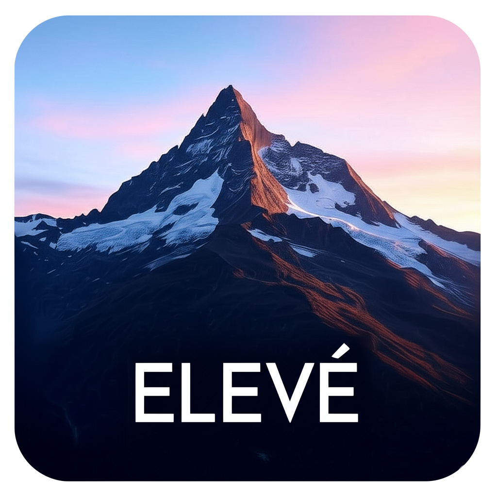

About Me
Adaptable and driven Master’s student in Information Science with a strong foundation in data analysis, disinformation research, and intelligence studies. Experienced in using tools like Python, SQL, Neo4j, and Tableau to extract insights from complex datasets. Demonstrated leadership in high-pressure environments and a deep curiosity for emerging technologies.
My journey into Information Science is fueled by a passion for uncovering insights from data and understanding the impact of technology on society. My background in Management and Human Organization provides a unique perspective on how information systems and data can be leveraged effectively within various contexts.
Education
M.S. in Information Science
Indiana University, Luddy School of Informatics, Computing, and Engineering
Expected Dec 2025
Key Coursework: Systems Analysis & Design, Information Visualization, Database Design, Social Media Mining, Deception and Counterintelligence, Human-Computer Interaction, Organizational Informatics & Economics Security.
B.A. in Management and Human Organization
Indiana University
December 2022
Minor: Human-Centered Computing
Key Interests
- Data Analysis & Visualization
- Human-Centered Computing & UX
- iOS App Development
- Information Systems & Design
- Emerging Technologies & AI Ethics
Soft Skills
Languages
Skills
Programming & Analysis
- Python (Pandas, NumPy, Scikit-learn)
- SQL (PostgreSQL, MySQL)
- Neo4j (Graph Databases)
- Tableau
- NVivo
- Jupyter Notebooks
- Gephi
Research & Intelligence
- Disinformation Analysis
- Hybrid Warfare Studies
- Deception Studies
- Open-Source Intelligence (OSINT)
- Threat Assessment
- Survey Design & Analysis
Visualization & Design
- Tableau
- Gephi
- Unreal Engine 5 (Conceptual Design)
- Figma (Basic UI/UX Prototyping)
Other Tools & Platforms
- GitHub & Git Version Control
- Xcode (iOS Development)
- Qualtrics
- Notion
- Google Workspace Suite
- Adobe Acrobat Pro
- Microsoft Office Suite
Professional Experience
Assistant Manager
Residential Programs and Services, IMU, Forest Dining — Bloomington, IN
May 2019 – October 2024
- Managed and mentored over 100 student staff members across various shifts, fostering a collaborative and productive team culture.
- Resolved operational challenges efficiently and streamlined workflows to meet dynamic campus demands and service standards.
- Actively encouraged feedback and implemented cross-team improvements to enhance service quality and operational efficiency.
Consultant / Founder
Radha Madhav Buildcon Ltd. — Pune, MH, India
May 2017 – Present
- Founded a real estate consultancy focusing on residential development projects.
- Successfully raised capital, managed project pitches, and cultivated client relationships, navigating challenges including the COVID-19 pandemic.
- Handled cross-border communications and managed documentation for international stakeholders and clients.
Manager
Life Designs Inc. — Bloomington, IN
February 2023 – July 2023
- Oversaw operations for multiple group homes and managed care teams serving individuals with developmental disabilities.
- Developed and implemented personalized care plans in collaboration with multidisciplinary professionals.
- Ensured strict compliance with all legal, ethical, and quality care standards.
Projects

Elevé - iOS App (Master's Capstone Project)
Developed "Elevé," an iOS application focused on daily quotes and mood insights, as my Master's Capstone project (ILS-Z 690). Built using Xcode and Swift, the app aims to provide users with daily inspiration and a simple way to track and reflect on their mood. Expected completion: Fall 2025.
Technologies: iOS Development Xcode Swift UI/UX Design Capstone Project

Unreal Engine Simulation Project
Developed a 3D educational environment using Unreal Engine 5 to simulate Arctic climate impact scenarios. This project focused on creating an immersive, insight-driven platform to visualize complex environmental data and its consequences.
Technologies: Unreal Engine 5 3D Modeling (Conceptual) Simulation Design Educational Technology
View Project VideoAcademic Project Showcase (Examples)
Throughout my M.S. program, I've worked on various applied projects. Examples include:
- Systems Analysis & Design (ILS-Z 556): Led a team to develop a comprehensive system requirements specification and design prototype for an innovative information management solution for [e.g., a non-profit organization or a university department].
- Information Visualization (ILS-Z 637): Created interactive dashboards using Tableau to analyze and present insights from [e.g., a large public dataset on global health trends], focusing on clear communication of complex patterns.
- Database Design (ILS-Z 511): Designed, implemented, and queried a relational database for [e.g., a mock e-commerce platform], ensuring data integrity and efficient retrieval.
- Social Media Mining (ILS-Z 639): Utilized Python libraries (e.g., Tweepy, NLTK) to collect and analyze social media data, identifying key themes and sentiment related to [e.g., public discourse on a new technology].
Note: Specific project details, reports, or links to GitHub repositories (if public) can be added as they become available.
Leadership & Affiliations
Student Representative, MIS Curriculum Committee
2024 – 2025
Representing student interests and providing constructive feedback on the Master of Information Science curriculum at Indiana University's Luddy School of Informatics, Computing, and Engineering. Collaborating with faculty to enhance course offerings and student experience.
Key contributions include designing and distributing a comprehensive student feedback survey using Qualtrics, analyzing the collected data to identify key insights, and compiling a detailed report with recommendations for curriculum improvements.
Skills demonstrated: Qualtrics Survey Design & Analysis Data Analysis Report Writing Stakeholder Communication
Connect With Me
I'm always open to discussing new opportunities, collaborations, or just chatting about technology, data, and innovative ideas. Feel free to reach out through the following platforms: